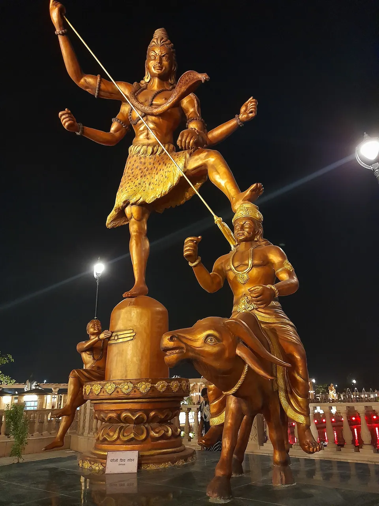

Mahakaleshwar Darshan Timings and Aarti Schedule (2026)

Mahakaleshwar darshan timings: general darshan at the temple is listed from about 4:00 AM to 11:00 PM, with the Bhasma Aarti first, at about 4:00 to 6:00 AM, and the Shayan Aarti last, at about 10:30 to 11:00 PM. The other aartis move by about half an hour between the Chaitra-to-Ashwin schedule and the Kartik-to-Falgun schedule. Third-party guides disagree on several times, so treat every hour below as a plan and confirm it with the temple.
We have walked many pilgrim families to the gate at all hours, and the question we hear most is simply, "What time should we be there?" This guide lays out the day as the guides describe it, says plainly where they differ, and shows how to fit the timings around grandparents, children and a good night's sleep.
The day at Mahakal at a glance
Mahakaleshwar is one of the twelve Jyotirlingas, and the temple keeps a fixed rhythm of aartis from before dawn until late at night. One guide states that the temple is open for darshan from 4:00 AM until 11:00 PM (Yatradham). Another lists darshan slots of 6:00 AM to 12:00 PM, 12:00 to 4:00 PM and 6:00 to 10:30 PM, and says the main gates close at 10:00 PM for the Shayan Aarti (Ujjain Darshan).
So the two guides already differ on when the temple closes. The sensible reading is this: the doors open very early, the main flow of darshan runs through the day and evening, and the last entry is earlier than the last aarti. Plan to be in the queue well before 10:00 PM.
Aarti timings: the Chaitra to Ashwin schedule
The Hindu calendar sets the schedule, not the English months. Yatradham lists one set of timings for the months from Chaitra to Ashwin, which covers spring, summer and the rains. Ashwin is the month of Navratri, so this schedule applies to the weeks around today (our Navratri guide has the 2026 dates).
- Bhasma Aarti: 4:00 to 6:00 AM
- Dadhyodak (morning) Aarti: 7:00 to 7:30 AM
- Bhog Aarti: 10:00 to 10:30 AM
- Sandhya Puja (evening aarti): 5:00 to 5:30 PM
- Shri Mahakal Aarti: 7:00 to 7:30 PM
- Shayan Aarti: 10:30 to 11:00 PM
Source: Yatradham's temple timings page. The Ujjain Darshan page lists the same morning, midday and evening hours in its main table, which is reassuring.
Aarti timings: the Kartik to Falgun schedule
Once Kartik begins, the same guide moves most aartis later by about half an hour. Kartik follows Ashwin and falls around the Diwali season, as our Ujjain in November guide explains. The second schedule runs until Falgun.
- Bhasma Aarti: 4:00 to 6:00 AM (unchanged)
- Dadhyodak Aarti: 7:30 to 8:00 AM
- Bhog Aarti: 10:30 to 11:00 AM
- Sandhya Puja: 5:30 to 6:00 PM
- Shri Mahakal Aarti: 7:30 to 8:00 PM
- Shayan Aarti: 10:30 to 11:00 PM (unchanged)
Source: the same Yatradham page, which does not give calendar dates for the changeover. That page is dated July 2025, so please check the current notice before you travel. If your visit falls close to the start of Kartik, ask the temple which schedule is running.
Where the guides disagree
The Sandhya Aarti is the least settled. A separate guide gives 7:00 to 7:45 PM in summer and 6:30 to 7:15 PM in winter, and says the times shift twice a year (Ujjain Darshan on the Sandhya Aarti). That does not match the 5:00 PM and 5:30 PM listings above. We cannot tell you which is right, and we would rather say so than guess.
Bhasma Aarti: the one that needs a plan
The Bhasma Aarti is the famous pre-dawn aarti, listed at about 4:00 to 6:00 AM. Guides say it needs an advance booking made online, and that a valid photo ID is checked at entry (Ujjain Darshan booking guide). They differ on when new dates open on the portal, so check the official site for the current process. The booking steps deserve a full article of their own, so we keep them short here.
One detail matters for families. According to the guides we read, a temple notice for the 2026 Shravan month moved the Bhasma Aarti earlier, to around 2:00 or 3:00 AM, for that period only. That window has ended, but it shows why you must check the latest notice. Our complete Mahakaleshwar guide explains what the aarti is and how to prepare for it.
Practical points that guides repeat: you are asked to deposit phones, cameras and bags in a locker before entering, and men are usually asked to wear a dhoti for the Bhasma Aarti. Dress rules are set by the temple, so confirm them rather than relying on any blog, including ours.

Sandhya and Shayan Aarti: calmer alternatives
Many families find the evening aartis gentler than the pre-dawn one. The Ujjain Darshan page says the Sandhya Aarti is entered through Nandi Dwar or the general queue via the Mahakal Lok corridor, and suggests arriving one to one and a half hours early for a better view. Its summary table lists an advance pass, but the same page's FAQ says none is needed, so verify before you go.
The Shayan Aarti closes the day at about 10:30 to 11:00 PM. One guide says it needs an advance pass; another says it does not (Ujjain Darshan on the Shayan Aarti). Again, check. If you have small children or elders who tire early, the late morning and early evening are usually easier than the extremes of the day.
Building your day around the timings
If you choose the Bhasma Aarti
Plan the whole previous day around it. Keep dinner light, sleep early, and keep the next afternoon free for rest. Guides advise reaching the gate well before 4:00 AM, with some suggesting an arrival as early as 3:00 to 3:30 AM and others earlier, so confirm your reporting time on your permit.
If you prefer a gentler day
A relaxed rhythm works well for families with elders: a morning darshan after breakfast, a rest at your stay through the afternoon, and the evening aarti before dinner. Add one nearby place each day instead of many. Our ten places beyond Mahakaleshwar and the travel page will help you choose.
On festival days
Timings and queues change on Mahashivratri, in Shravan and around Kartik festivals. One guide says morning aarti times shift by about 30 minutes in winter and on festival days, and that darshan hours are extended. Always check the temple's notice for your exact date.
Where to stay near Mahakaleshwar for these timings
Timings like these are easiest when the stay is close. All five AP Villas are within 2 km of Mahakaleshwar Jyotirlinga, about 6 minutes by car or 12 minutes on foot, and in-house guests get a complimentary Mahakal shuttle (up to 5 guests per trip).
Rudrangan Suites: rest between early and late aartis

Rudrangan Suites, opened in 2026, has designer finishes, premium linens and garden seating. It has 3 bedrooms and sleeps 6, from ₹5,200 per night. A lift, wheelchair-friendly access and a kitchen with an induction cooktop make it easier to rest between a pre-dawn darshan and an evening aarti. Check-in is 10:30 AM and check-out 9:30 AM, and a later check-out can be arranged on request, subject to availability.
For bigger groups, Divinestay and Villa Aranya each sleep 8, and Om Shanti Stay sleeps 6. On your arrival evening, our caretaker explains the Bhasma Aarti booking process, online or at the counter, and the shuttle drops you at the temple gate by 3:30 AM for the 4 AM aarti. The help is complimentary; the temple's own permit is booked by you. See all five on our villas page.
Frequently asked questions
What are the Mahakaleshwar temple darshan timings?
One guide lists general darshan from 4:00 AM to 11:00 PM, while another lists slots from 6:00 AM to 10:30 PM and says gates close at 10:00 PM for the Shayan Aarti. Because guides differ, plan to enter well before 10:00 PM and confirm the current hours with the temple.
What time is the Bhasma Aarti at Mahakaleshwar?
Most guides list the Bhasma Aarti at about 4:00 to 6:00 AM, and say it needs an advance online booking and a photo ID. A temple notice moved it earlier for the 2026 Shravan month only. Check the official site for the current rules before you plan your night.
Do aarti timings change with the season?
Yes. One guide gives one schedule for Chaitra to Ashwin and a later one for Kartik to Falgun, with most aartis about half an hour later in the second. The Bhasma and Shayan Aartis stay at the same hours in that listing. Festival days can change timings too.
Is there a pass for the Sandhya and Shayan Aarti?
Guides contradict each other. One says an advance online pass is required for both; another says the Sandhya Aarti can be joined through the general queue and the Shayan Aarti needs no booking. Please check the temple's latest rules before you travel, since they change.
What is the best time for darshan with elders or small children?
Many families find late morning or the early evening easier than the pre-dawn aarti, because queues are gentler and rest at your stay is close. If you do choose the Bhasma Aarti, keep the previous evening light and the next afternoon free for sleep.
Sources
- Yatradham: Mahakaleshwar temple timings
- Ujjain Darshan: Shri Mahakaleshwar temple timings 2026
- Ujjain Darshan: Sandhya Aarti at Mahakaleshwar
- Ujjain Darshan: Bhasma Aarti online booking guide
- Ujjain Darshan: Shayan Aarti booking
Timings, prices and dates change, especially on festival days. Please verify before you travel with the official temple or government site.
Whichever aarti you choose, we hope your family reaches Mahakal's door rested and unhurried. If you would like help planning the days, write to us and we will answer plainly.
— Apoorv, Founder, AP Villas & Resorts